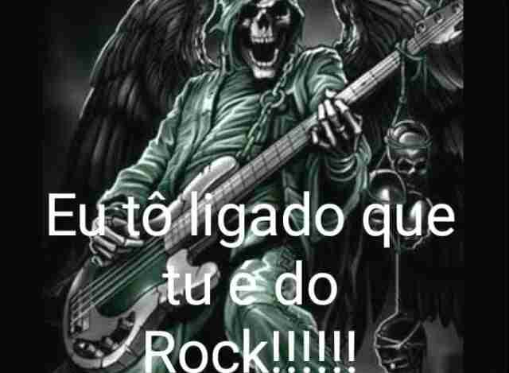

Metallica ou MegaDeth? Qual você escolhe?
Tem Certeza?
Boa escolha, e entre Nirvana e Foo Fighters? Qual você prefere?
Você parece meio indeciso, creio que Metallica se encaixa mais no seu perfil
Você tem um bom gosto musical, porém necessita de mais conhecimento do rock. Você é "Das antiga".
Você tem um ótimo gosto musical! Meus parabéns, você é do rock
Não é possível cara, Nirvana é ruim demais, ele só tem duas músicas que prestam de verdade
Você é do rock por qual motivo?
Dessa vez vou fazer questão de você escolher o correto.
Isso aí cara! As únicas pessoas que prestam nesse mundo hoje em dia são os do Rock.
Nossa mano que decepção, pensei que você era do rock por causa da moral né.
Você é simplesmente perfeito cara, Você realmente é do rock.
Vamos lá novamente... não estou te forçando a nada, porém você chapou muito.